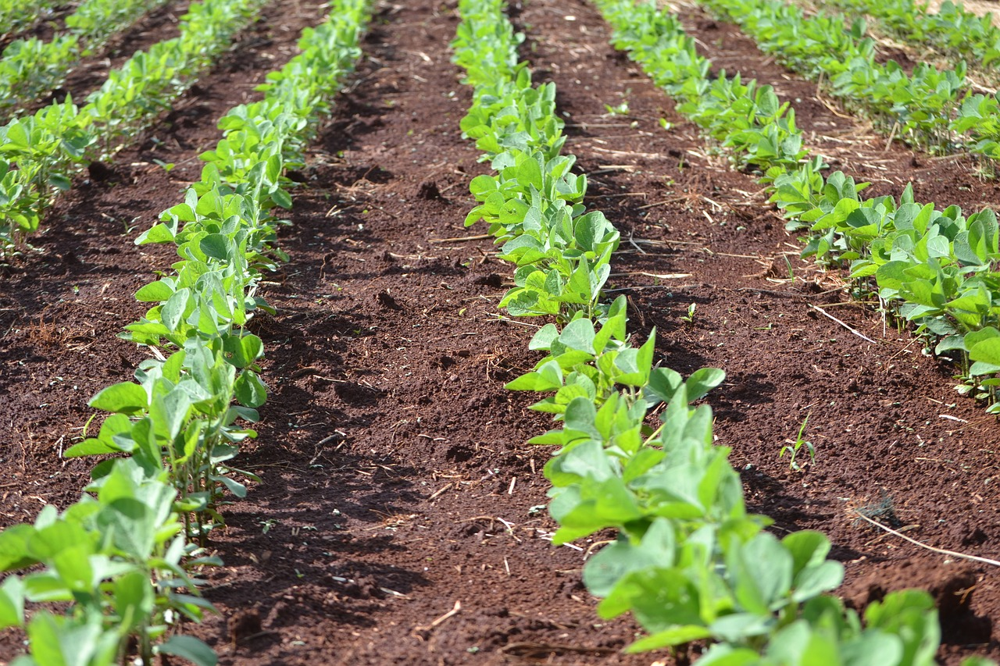

OpenCVを利用した葉面積の推定¶
Pythonで画像を扱う際に、OpenCVというライブラリがよく利用されます。 今回はこのOpenCVを用いて、作物成長段階の指標となる葉面積を推定します。
まずはOpenCVモジュールを読み込みます。 以下のチャンクを実行すると、今動いているPythonの環境にOpenCVの機能が追加されます。
[1]:
import cv2
作業しているパソコンにOpenCVがインストールされていない場合は、エラーが出ますので、以下のコマンドでインストールして、再度実行してください。
[2]:
!pip install opencv-python
Requirement already satisfied: opencv-python in /home/takahisa/anaconda3/envs/py38/lib/python3.8/site-packages (4.4.0.44)
Requirement already satisfied: numpy>=1.17.3 in /home/takahisa/anaconda3/envs/py38/lib/python3.8/site-packages (from opencv-python) (1.19.1)
うまくインストールされれば、以下のコマンドでバージョンが表示されます。
[3]:
cv2.__version__
[3]:
'4.4.0'
OpenCVでの画像の表示¶
まずは画像ファイルをJupyter Notebookに読み込んで表示してみましょう。
画像は、.ipynbファイルと同じフォルダにdataという名前のフォルダを作成し、その中に保存してください。以下では、www.pxfuel.comから取得した画像を利用しています。
下記のチャンクを実行すると、imageという名前の別ウィンドウが立ち上がり、画像が表示されます。(Jupyter labをWSL2上やGoogle Colaboratoryで動かしている場合、下のコードは機能しないかもしれません。) 表示されたウィンドウは、キーボードのいづれかのキーを押して閉じてください。
[4]:
# ファイルへのパスをimage_path変数に代入する。
# image_path = 'data/field.jpg'
image_path = 'data/field_2.jpg'
# 画層をOpenCVのimage形式で読み込む
img = cv2.imread(image_path)
# OpenCV のimshow関数で、画像を表示する
cv2.imshow('image',img)
cv2.waitKey(0)
cv2.destroyAllWindows()
上のチャンクを実行すると、別ウィンドウで次の画像が表示されます。

表示されたウィンドウを閉じてもチャンクの番号が[*]と表示されたままの場合は、Jupyter NotebookメニューのKernel -> Restart Kernelで、カーネルを再起動してください。
画像の表示はこの方法でもいいですが、matplotlibというライブラリを利用して、Jupyter Notebook内にインラインで表示させる下記の方法がよく用いられます。
まずはmatplotlibをインポートします。(必要であればmatplotlibを!pip install matplotlib からインストールしてください。)
[5]:
import matplotlib.pyplot as plt
ここでは、matplotlibライブラリ内のpyployというサブモジュールをpltという別名でインポートしました。このように別名を使ってインポートすることにより、たとえばmatplotlib.pyplot.imshow()と書く代わりに、plt.imshow()と書くことができるようになります。
import文はプログラムの一番最初にまとめて記述することが慣例ですが、ここでは必要になる箇所で適宜宣言することにします。
では、matplotlibのmatshow関数を使って画像を表示しましょう。
[6]:
plt.matshow(img)
[6]:
<matplotlib.image.AxesImage at 0x7fb636e8c370>
色が変ですね。
[7]:
# 画層をRGBの順で読み込む
img_bgr = cv2.imread(image_path)
# cvtColor() 関数でBGRからRGBへ変換する
img_rgb = cv2.cvtColor(img_bgr, cv2.COLOR_BGR2RGB)
# matplotlibで表示
plt.matshow(img_rgb)
[7]:
<matplotlib.image.AxesImage at 0x7fb63457c700>
.jpgファイルとして保存された写真をPythonで表示することができました。
画像データとはなにか¶
詳しくはESRIのサイトに解説があるので、参考にしてください。ベクターデータとは:www.esrij.com、 ラスターデータとは:wwww.esrij.com
今回読み込んだ画像はラスタデータです。ここではPythonの中でどのように保存されているかを見ていきます。
まずは、print()関数を用いて、作成したimg_bgrをそのまま表示させてみます。
[8]:
print(img_bgr)
[[[ 71 205 152]
[ 68 202 149]
[ 68 199 148]
...
[ 43 66 92]
[ 68 95 121]
[105 136 161]]
[[ 70 206 154]
[ 68 204 152]
[ 64 200 148]
...
[ 58 85 111]
[ 78 109 134]
[107 143 167]]
[[ 67 206 155]
[ 64 203 152]
[ 59 198 147]
...
[ 76 113 135]
[ 85 126 149]
[102 146 169]]
...
[[187 217 252]
[191 219 254]
[181 206 246]
...
[104 120 143]
[ 98 103 128]
[ 90 91 117]]
[[168 197 224]
[184 210 240]
[189 214 246]
...
[115 136 157]
[104 115 137]
[ 90 96 119]]
[[150 175 195]
[163 187 209]
[167 190 216]
...
[117 142 158]
[101 116 135]
[ 82 93 113]]]
[9]:
img_rgb.shape
[9]:
(853, 1280, 3)
チャンネルの分解¶
[10]:
r, g, b = cv2.split(img_rgb)
r.shape
[10]:
(853, 1280)
[11]:
plt.matshow(r, cmap='Reds')
plt.colorbar()
plt.show()
[12]:
channels = [img_rgb, r, g, b]
colors = (None, 'Reds','Greens','Blues')
titles = ('Original', 'Red channel', 'Green channel', 'Blue channel')
fig, axs = plt.subplots(1, 4, figsize=(12,3)) # figとaxを作成
for idx, (title, channel, color) in enumerate(zip(titles, channels, colors)):
axs[idx].set_title(title)
ax = axs[idx].matshow(channel, cmap=color)
axs[idx].xaxis.tick_bottom()
if color:
fig.colorbar(ax, ax=axs[idx], fraction=0.04)
plt.tight_layout()
plt.show()
HSVへの変換¶
[13]:
img_hsv = cv2.cvtColor(img_bgr, cv2.COLOR_BGR2HSV)
img_hsv.shape
[13]:
(853, 1280, 3)
[14]:
channels = h, s, v = cv2.split(img_hsv)
channels.insert(0, img_rgb)
colors = (None, 'hsv','Greys','Greys')
titles = ('Original', 'Hue', 'Saturation', 'Value')
fig, axs = plt.subplots(1, 4, figsize=(12,3)) # figとaxを作成
for idx, (title, channel, color) in enumerate(zip(titles, channels, colors)):
axs[idx].set_title(title)
ax = axs[idx].matshow(channel, cmap=color)
axs[idx].xaxis.tick_bottom()
if color:
fig.colorbar(ax, ax=axs[idx], fraction=0.04)
plt.tight_layout()
plt.show()
[15]:
# ある地点のピクセル値を取得する
x=999
y=200
img_rgb[y, x, :]
[15]:
array([ 95, 128, 73], dtype=uint8)
[16]:
# 複数地点のピクセル
閾値による分類¶
[17]:
import numpy as np
[18]:
g_min = 150
g_max = 250
img_bin = (g_min < g) & (g < g_max) * 1
# plt.imshow(img_bin, cmap='binary_r')
plt.matshow(img_bin, cmap='binary_r')
plt.colorbar(ticks=[0, 1])
plt.show()
[19]:
h_min = 40
h_max = 60
img_bin = (h_min < h) & (h < h_max) * 1
plt.matshow(img_bin, cmap='binary_r')
plt.colorbar(ticks=[0, 1])
plt.show()
[20]:
print(f'Mask ratio is {img_bin.sum()/img_bin.size}')
Mask ratio is 0.2845270369284877
[29]:
import random
def plot_3d(img, sampling=1000, mask=None, **kwargs):
xlab, ylab, zlab = 'R', 'G', 'B'
y,x,z = img.shape
img_flat = np.reshape(img, (x*y,z))
if mask is not None:
mask_flat = np.reshape(mask, (x*y)).astype('bool')
img_flat = img_flat[mask_flat, :]
if sampling != 0:
# random sample
img_flat = img_flat[np.random.choice(len(img_flat), sampling, replace=False)]
colors = img_flat / 255
fig = plt.figure(**kwargs)
ax = fig.add_subplot(111, projection='3d')
ax.scatter(xs=img_flat[:,0],
ys=img_flat[:,1],
zs=img_flat[:,2],
s=10,
c=colors,
lw=0)
ax.set_xlabel(xlab)
ax.set_ylabel(ylab)
ax.set_zlabel(zlab)
plt.show()
# matplotlibのインタラクティブプロットを有効化
# うまく行かない場合はコメントアウトしてください。
# %matplotlib widget
plot_3d(img = img_rgb,
mask=img_bin,
sampling=1000,
figsize=(10,10))
[28]:
# インタラクティブを無効化
%matplotlib inline
ラベルの利用¶
json形式のファイルに保存されます。以下で、jsonファイルをバイナリラスタに変換していきます。[23]:
import json
[24]:
import math
from matplotlib import pyplot as plt
from IPython.display import display, Javascript
from image_labelling_tool import labelling_tool, labelling_tool_jupyter
---------------------------------------------------------------------------
ModuleNotFoundError Traceback (most recent call last)
<ipython-input-24-e208dddd0d7e> in <module>
2 from matplotlib import pyplot as plt
3 from IPython.display import display, Javascript
----> 4 from image_labelling_tool import labelling_tool, labelling_tool_jupyter
ModuleNotFoundError: No module named 'image_labelling_tool'
[ ]:
display(Javascript(labelling_tool_jupyter.LABELLING_TOOL_JUPYTER_JS))
[ ]:
# Specify our 3 label classes.
# `LabelClass` parameters are: symbolic name, human readable name for UI, and RGB colour as list
label_classes = [labelling_tool.LabelClass('plant', 'Plant', [0, 255, 192]),
labelling_tool.LabelClass('soil', 'Soil', [255, 128, 0])]
# Define the tool dimensions
TOOL_WIDTH, TOOL_HEIGHT = 980, 480
# Load in .JPG images from the 'images' directory.
labelled_images = labelling_tool.PersistentLabelledImage.for_directory('data', image_filename_pattern='*.jpg')
print('Loaded {0} images'.format(len(labelled_images)))
labelling_tool_config = {
'tools': {
'imageSelector': True,
'labelClassSelector': True,
'drawPolyLabel': True,
'compositeLabel': True,
'deleteLabel': True
}
}
[ ]:
# Create the labelling tool IPython widget and display it
# labeller = labelling_tool_jupyter.ImageLabellingTool(labelled_images=labelled_images, label_classes=label_classes,
# tool_width=TOOL_WIDTH, tool_height=TOOL_HEIGHT,
# labelling_tool_config=labelling_tool_config)
#
# display(labeller)
[ ]:
labelled_img = labelled_images[1]
labels_2d = labelled_img.render_labels(label_classes=['plant','soil'], pixels_as_vectors=False)
plt.imshow(labels_2d, cmap='gray')
plt.show()
[ ]:
with open('data/field_2__labels.json') as f:
data = json.load(f)
[ ]:
label_plant = [l for l in data['labels'] if l['label_class'] == 'plant']
label_soil = [l for l in data['labels'] if l['label_class'] == 'soil']
print(f'plant: {len(label_plant)}\nsoil: {len(label_soil)}')
[ ]:
import pprint
pprint.pprint(data)